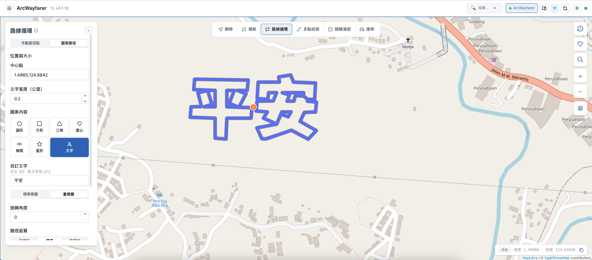
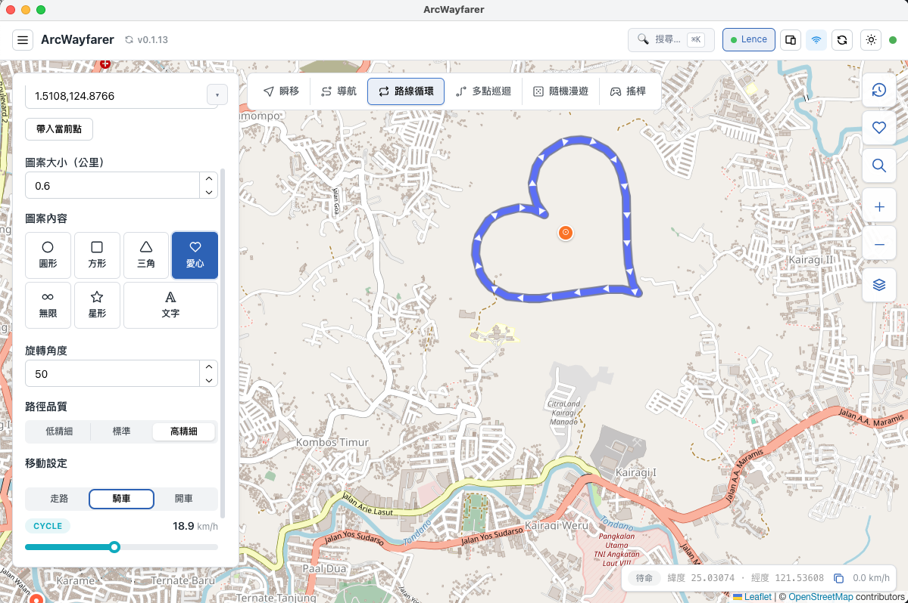
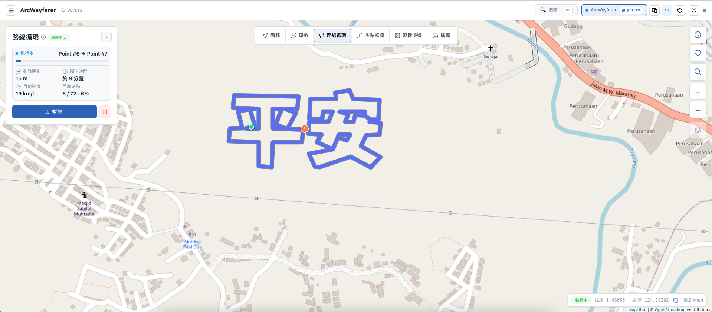

選擇「路線循環」與圖案
在路線循環切換至圖案路徑，選擇圓形、愛心、星形或文字。先設定中心點與圖案寬度，讓路徑範圍符合預期。
ROUTE ART GUIDE
ArcWayfarer 的「圖案路徑」能先在地圖上預覽，再依你的設定執行移動路線。它適合製作活動路線、個人化打卡或位置功能測試所需的固定圖形。

在路線循環切換至圖案路徑，選擇圓形、愛心、星形或文字。先設定中心點與圖案寬度，讓路徑範圍符合預期。
愛心、星形等圖案可調整旋轉與路徑細節。選擇文字時，輸入內容並選用標準黑體或重黑體，路徑會即時顯示在地圖上。
確認圖案位置、大小與方向後，設定步行、騎車或開車速度，再開始執行。執行中的狀態卡片會顯示目前節點、距離、速度與預估時間。
愛心路徑可設定大小、旋轉角度與細節程度；這些設定都會直接反映在地圖預覽。開始後，ArcWayfarer 以精簡狀態卡片保留必要的控制與進度資訊。

在啟動前確認圖案的中心、大小、旋轉與移動設定。

狀態卡片呈現目前節點、剩餘距離、預估時間、速度，並提供暫停與停止控制。
最多 5 個中文字或 12 個英文字母。較短的文字通常更容易在地圖上辨識。
寬度決定路徑的實際範圍。開始前先在地圖上檢查它是否落在你預期的區域。
圖案是由多個路徑點組成；請在預覽時確認方向、形狀與移動速度，避免不需要的行程。
可選擇圓形、方形、三角形、愛心、無限、星形，或輸入自訂文字。
可以。ArcWayfarer 會先將圖案顯示在地圖上；確認中心、寬度與旋轉後，再按開始執行。
使用字型支援的中文字與英文字母；介面會提示空白、表情符號、長度或不支援字元等問題。